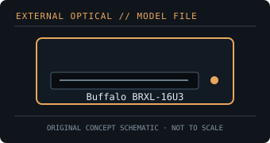

[ OPTICAL DRIVES // IDENTIFIED EXTERNAL MODEL ]
Buffalo BRXL-16U3
Full-size external 16× Blu-ray writer with BDXL support. The desktop drive’s external power and USB 3.0 interface distinguish it from Buffalo’s slim portable models.

IDENTIFICATION: Confirm the full model/suffix against the label and manufacturer documentation. Read capability is not write capability; speed ratings depend on media and recording mode.
Model-specific specifications
| Catalog subcategory | External Blu-ray drives |
|---|---|
| Exact product identifier | Buffalo BRXL-16U3 |
| Supported write formats / rates | BD-R single-layer up to 16×, dual-layer up to 8×, and supported BDXL triple/quad-layer up to 6×; BD-RE recording supported (layer/media-specific rates apply). DVD±R up to 16×, DVD-RAM up to 5× and CD-R up to 48×. |
| Supported read formats / rates | Reads BD-ROM, BD-R/RE and supported BDXL media; DVD-ROM, DVD±R/RW, DVD-RAM, CD-ROM, CD-R/RW are also supported. Published maximum read rate reaches 12× for BD-ROM and 48× for CD-ROM. |
| USB interface and power | USB 3.0 Type-B external interface, backward-compatible with USB 2.0; external AC adapter required. Prefer a direct USB 3.x host port for best transfer performance. |
| Host compatibility | Buffalo lists Windows and Mac data operation; bundled CyberLink playback/authoring software is Windows-focused. Verify macOS application and protected Blu-ray playback requirements separately. |
| Model distinction | Desktop BRXL-16U3 model with AC power and 16× BD-R; do not apply these rates or dimensions to the portable BRXL-PT6U3. |
Host and media notes
Desktop BRXL-16U3 model with AC power and 16× BD-R; do not apply these rates or dimensions to the portable BRXL-PT6U3.
- Use the drive only with media types explicitly supported by the exact manual. BDXL, standard BD-R/RE and UHD Blu-ray are distinct capabilities.
- Check operating-system and playback/authoring application support independently; a USB connection alone does not provide Blu-ray codec, protected-video or UHD playback capability.
- For preservation work, record drive model/firmware, host interface, software, media type, checksums and read/verification errors with each image.
Model documentation and specification sources
- Buffalo — BRXL-16U3 product datasheetManufacturer datasheet for the MediaStation 16× BDXL desktop drive.
- Buffalo Americas — BRXL-16U3 downloadsManufacturer product support/downloads for the 16× desktop BDXL writer.
Manufacturer and manual speed ratings are maxima under supported media conditions and are not a guarantee of actual sustained read/write performance on an individual disc.